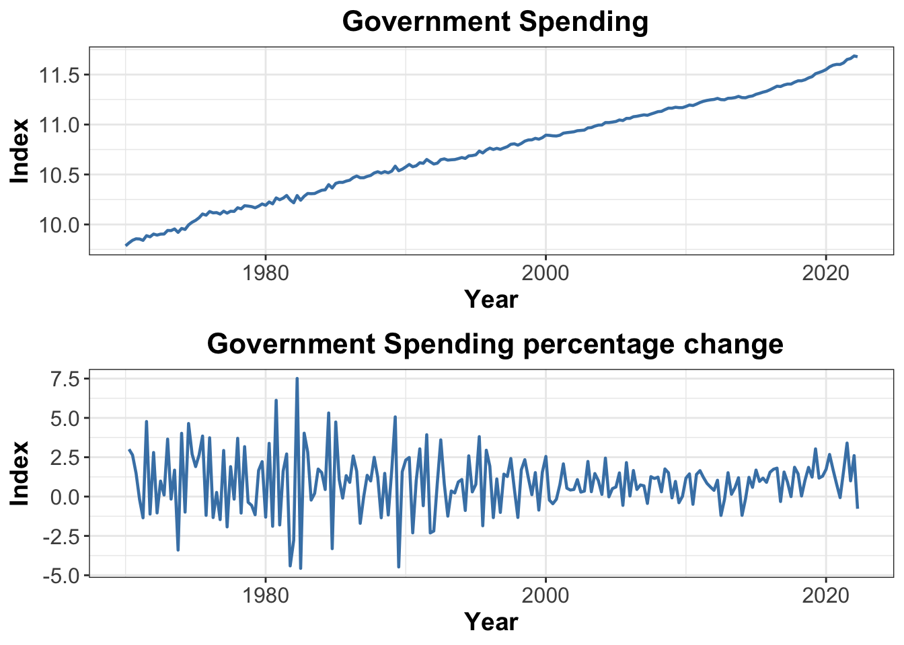

library(readrba)
library(tseries)
library(ggplot2)
library(cowplot)
library(dplyr)
library(zoo)Research Proposal
Abstract.
Keywords. Government spending shock, exchange rate,impulse responses
Please note that the website https://www.rba.gov.au/statistics/tables/ may sometimes be unstable and unable to load. Therefore, you may encounter errors such as “Could not read HTML at https://www.rba.gov.au/statistics/tables/” when using read_rba() in R.
keep original variable but why?, minisudar prior.
1. The question objective, and motivation
Objective
The research project aims to model the effect of government spending shocks on trade balance, real exchange rate and consumption
Research question
How does the unanticipated government spending shock influence trade balance, real exchange rate and consumption in the short run and in the long run?
Motivation
Most economies have experienced significant shocks due to Covid Pandemic,resulting in a marked increase in government net debt-to-GDP ratios. For instance,Australian’s general government net debt-to-GDP ratio surged from 24.5% in 2019 to 38.1 in 2021% by (abs2021government?), while the United States’s ratio rose from 106.1% to 121.1% by (fed2023federal?).
Extensive research has been conducted on the impact of government spending shocks on output, consumption, and other significant macroeconomic indicators. According to economic theory, positive shocks increase output and consumption. However, there has been limited focus on the external sector of the economy, including the real exchange rate, import and export sector. By using SVARs model to identify government spending shocks and examining their relationship with these variables, policymakers can improve the design and implementation of fiscal and monetary policies to respond to unexpected government spending shocks.
2. Data and their properties
Propose data for the investigation of the problem at hand. Motivate your choice of the variable and its form/transformation. Download the data using the readrba or readabs packages. Transform the variables to the desired format and visualise them. Investigate its properties and argue on: why they are essential to answer your research question, how they inform or motivate your model equations.
Data
I will use quarter data for estimation in this research because it would be more reasonable to assume that government spending could be able to respond within a given period. This research will primarily focus on the Australian economy to enable a detailed analysis of its response to government spending shocks, while acknowledging that the results may not necessarily apply to other countries due to their unique institutional features and economic characteristics. Future work could explore the extension of the model to other countries to provide a more comprehensive understanding of the cross-country variation in response to government spending shocks.
First, I load the pacakge that can directly download the data from the Reserve Bank of Australia (rba2023statistics?).
Variables
Consumption
The data on household final consumption expenditure, measured in $million, is recorded quarterly and adjusted for seasonal variations. However, the plot indicates that the data is not stationary. The mean value is changing over time. Macroeconomic variables have these properties. Thus, I turned to the consumption growth data instead. This data measures the year-ended household consumption growth, and shows a decrease in 2020 due to the COVID-19 pandemic. I conducted an adf test and found that the p-value was 0.01, indicating that the data is stationary. The mean value of the consumption growth is 3.41%, which suggests that the growth rate is fluctuating around this value. This growth rate is stationary over time.
The original variable consumption is log - transformed in my model to reduce the scale and match the assumption of normality.
consumption <- read_rba('H2')
consumption$Date <- as.Date(consumption$date, format = "%Y-%m-%d")
# Household final consumption expenditure measured in $million
consumption2 <- subset(consumption, series_id == "GGDPECCVPSH")
consumption3 <- subset(consumption,series_id == "GGDPECCVPSHY")
consumption4 <- merge(consumption2, consumption3, by = "date", all = FALSE)
adf.test(consumption3$value)
Augmented Dickey-Fuller Test
data: consumption3$value
Dickey-Fuller = -6.4592, Lag order = 6, p-value = 0.01
alternative hypothesis: stationary# log transform of the level
consumption2$log_con = log(consumption2$value)
# Create a line plot of
plot4<- ggplot(data = consumption2, aes(x = Date, y =log_con)) +
geom_line(color = "steelblue", size = 1) +
labs(title = " Household Consumption (log)", x = "Year", y = "Index") +
theme_bw() +
theme(plot.title = element_text(size = 16, hjust = 0.5, face = "bold"),
axis.title = element_text(size = 14, face = "bold"),
axis.text = element_text(size = 12),
legend.position = "none")
plot5<- ggplot(data = consumption3, aes(x = Date, y =value)) +
geom_line(color = "steelblue", size = 1) +
labs(title = " Household Consumption Growth", x = "Year", y = "Index") +
theme_bw() +
theme(plot.title = element_text(size = 16, hjust = 0.5, face = "bold"),
axis.title = element_text(size = 14, face = "bold"),
axis.text = element_text(size = 12),
legend.position = "none")
consumption_plot <- plot_grid(plot4, plot5, ncol = 1, align = "v")
print(consumption_plot)
GDP
the real GDP was measured in million dollars, and the plot of this data indicates that it is non-stationary due to its increasing trend. In order to address this, I transformed the original variable using the lag() function in R, resulting in the GDP percentage change.
Upon examining the plot of the GDP percentage change, it appears to be more stationary over time, indicating that this transformed variable may be more suitable for use in the model.It fluctuates a lot during covid period. Therefore, I will proceed with using the GDP percentage change as the variable for the model instead of the original real GDP in million dollars.
GDP <- read_rba('H1')
GDP$Date <- as.Date(GDP$date, format = "%Y-%m-%d")
# Real GDP
GDP2 <- subset(GDP, series_id == "GGDPCVGDP")
library(dplyr)
GDP2 <- GDP2 %>%
mutate(percentage_change = (value - lag(value)) / lag(value) * 100)
# log transform of GDP
GDP2$log_gdp = log(GDP2$value)
# Create a line plot of
plot3<- ggplot(data = GDP2, aes(x = Date, y =percentage_change)) +
geom_line(color = "steelblue", size = 1) +
labs(title = " GDP percentage_change", x = "Year", y = "Index") +
theme_bw() +
theme(plot.title = element_text(size = 16, hjust = 0.5, face = "bold"),
axis.title = element_text(size = 14, face = "bold"),
axis.text = element_text(size = 12),
legend.position = "none")
gdp_plot<- ggplot(data = GDP2, aes(x = Date, y =log_gdp) )+
geom_line(color = "steelblue", size = 1) +
labs(title = " GDP(log) ", x = "Year", y = "Index") +
theme_bw() +
theme(plot.title = element_text(size = 16, hjust = 0.5, face = "bold"),
axis.title = element_text(size = 14, face = "bold"),
axis.text = element_text(size = 12),
legend.position = "none")
combined_gdp <- plot_grid( gdp_plot,plot3, ncol = 1, align = "v")
print(combined_gdp)
Exchange rate
The real exchange rate data is obtained from the Reserve Bank of Australia (RBA) and is provided on a quarterly basis. RBA uses Australian dolloar trade-weighted index as a measure of real exchange rate. It is the price of the Australian dollar interms of a group of foeign currencies based on the share of trade with Australia.
# TWI
real_exchange_rate <- read_rba("F15")
real_exchange_rate$Date <- as.Date(real_exchange_rate$date, format = "%Y-%m-%d")
real_exchange_rate_twi <- subset(real_exchange_rate, series_id == "FRERTWI")
adf.test(real_exchange_rate_twi$value)
Augmented Dickey-Fuller Test
data: real_exchange_rate_twi$value
Dickey-Fuller = -1.8165, Lag order = 5, p-value = 0.653
alternative hypothesis: stationaryMoreover, I also examine the nominal exchange rate variable. I download the AUD/USD exchange rate, as the US dollar is widely accepted as an international currency. I transform the daily data into quarterly data with mean. The figure displaying this data is shown below. (Note: The data obtained using the package may not exactly match the description on the website.) However, since the nominal interest rate may be influenced by various factors and also due to data availability, this research will focus solely on the real interest rate(TWI).
# Exchange rate US/AUD not sure if I will use it in the model
exchange_rate <- read_rba(table_no = 'F11.1')
#
exchange_rate$Date <- as.Date(exchange_rate$date, format = "%Y-%m-%d")
# Calculate quarterly averages
exchange_rate_quarterly <- exchange_rate %>%
mutate(Quarter = as.yearqtr(Date)) %>%
group_by(Quarter) %>%
summarize(ExchangeRate = mean(value, na.rm = TRUE))
# Plot the quarterly data
plot_exchange = ggplot(exchange_rate_quarterly, aes(x = Quarter, y = ExchangeRate)) +
geom_line(color = "blue") +
labs(x = "Date", y = "Exchange Rate", title = "Quarterly Exchange Rate (AUD/USD)") +
theme_minimal() +
scale_y_continuous(labels = scales::comma)
combined_plot <- plot_grid( plot1, plot_exchange, ncol = 1, align = "v")
# Print the combined plot
print(combined_plot)
Trade balance
The trade balance data is measured as a percentage of output and is recorded on a quarterly basis with seasonal adjustments. Upon examining the plot of this data, it appears to have been stationary prior to the COVID period. However, since then, the trade balance has been increasing. I will also have this variable in my model as a control variable.
Trade_balance <- read_rba("I1")
Trade_balance$Date <- as.Date(Trade_balance$date, format = "%Y-%m-%d")
Trade_balance2 <- subset(Trade_balance, series_id == "HTBGSCPGDP")
# Create a line plot of real_exchange_rate_twi
plot2<- ggplot(data = Trade_balance2, aes(x = Date, y = value)) +
geom_line(color = "steelblue", size = 1) +
labs(title = " Trade balance as a per cent of output", x = "Year", y = "Index") +
theme_bw() +
theme(plot.title = element_text(size = 16, hjust = 0.5, face = "bold"),
axis.title = element_text(size = 14, face = "bold"),
axis.text = element_text(size = 12),
legend.position = "none")
print(plot2)
government spending data
Due to package contraints, readrba or readabs are not applicable for government spending data because the data published about public sector is yearly based on ABS. I use fred as my data source instead. Government spending is increasing due to the increasing trend, thus I use function lag() to transform this data. Both the figure and the ADF test indicates it is stationary. I will also include this variable in my model.
# Load the library
library(fredr)
# Set your FRED API key
readRenviron("secret.R")
api_key <-Sys.getenv("MY_FRED_API_KEY")
fredr_set_key(api_key)
# Download the Australian government spending data (quarterly data, seasonally adjusted)
gov_spending_australia <- fredr(series_id = "AUSGFCEQDSMEI",observation_start = as.Date("1990-01-01"))
gov_spending_australia$log_gov = log(gov_spending_australia$value)
gov_spending_australia <- gov_spending_australia %>%
mutate(percentage_change = (value - lag(value)) / lag(value) * 100)
# Calculate real government spending
# Check the data
plot_log <- ggplot(gov_spending_australia, aes(x = date, y = log_gov)) +
geom_line() +
labs(title = "Australian Government Spending(log)",
x = "Date",
y = "Value") +
geom_line(color = "steelblue", size = 1) +
labs(title = " Australian Government Spending", x = "Year", y = "Index") +
theme_bw() +
theme(plot.title = element_text(size = 16, hjust = 0.5, face = "bold"),
axis.title = element_text(size = 14, face = "bold"),
axis.text = element_text(size = 12),
legend.position = "none")
plot_gd<- ggplot(gov_spending_australia, aes(x = date, y = percentage_change )) +
geom_line() +
labs(title = "Australian Government Spending Percentage change",
x = "Date",
y = "Value") +
geom_line(color = "steelblue", size = 1) +
labs(title = " Trade balance as a per cent of output", x = "Year", y = "Index") +
theme_bw() +
theme(plot.title = element_text(size = 16, hjust = 0.5, face = "bold"),
axis.title = element_text(size = 14, face = "bold"),
axis.text = element_text(size = 12),
legend.position = "none")
gd = plot_grid( plot_log,plot_gd ,ncol = 1, align = "v")
print(gd)
adf.test(na.omit(gov_spending_australia$percentage_change))
Augmented Dickey-Fuller Test
data: na.omit(gov_spending_australia$percentage_change)
Dickey-Fuller = -3.6596, Lag order = 5, p-value = 0.03065
alternative hypothesis: stationary3. The model and hypothesis
State the model equations including the assumptions regarding the model’s error terms. Explain every single notation you introduce to state the model. Explain how you will use the model to answer your research question and how it addresses your objectives. Explain what estimation output you will interpret to answer your research question. Bring about the relevant economic context.
Impusle response function
What irf I am interested. what type of output
Variance Decomposition
Model Specification
Using same notations in lecture, the model is specified as follows: \[B_0 y_t = b_0 + B_1 y_{t-1}+ ... + B_p y_{t-p}+\varepsilon_t\]